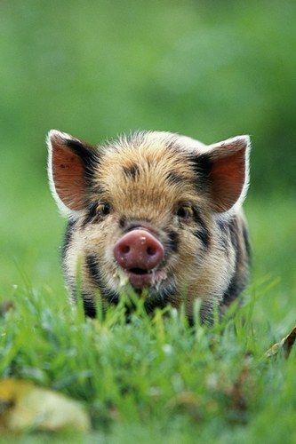

El cerdo doméstico adulto tiene un cuerpo pesado y redondeado, hocico comparativamente largo y flexible, patas cortas con pezuñas (cuatro dedos) y una cola corta.
La piel, gruesa pero sensible, está cubierta en parte de ásperas cerdas y exhibe una amplia variedad de colores y dibujos. A pesar de su apariencia son animales ágiles,
rápidos e inteligentes.
Adaptados mediante selección para la producción de carne, dado que crecen y maduran con rapidez, tienen un período de gestación corto, de unos ciento catorce días
(tres meses, tres semanas y tres días), y pueden tener camadas muy numerosas. Son herbívoros en estado salvaje porque tienen una mandíbula preparada para vegetales.
En su domesticación son omnívoros y se les da también carne, siempre picada, pero consumen una gran variedad de vegetales y restos orgánicos que contengan proteínas.
Además de la carne, del cerdo también se aprovechan la piel (cuero) para hacer maletas, calzado y guantes, y las cerdas para confeccionar cepillos.
Son también fuente primaria de grasa comestible saturada (manteca), aunque, en la actualidad, se prefieren las razas que producen carne magra.
Además, proporcionan materia prima de calidad para la elaboración del jamón.
En libertad los cerdos pueden llegar a vivir de diez a quince años. Haz Click asi para ver imagenes
Acá va la imagen:
